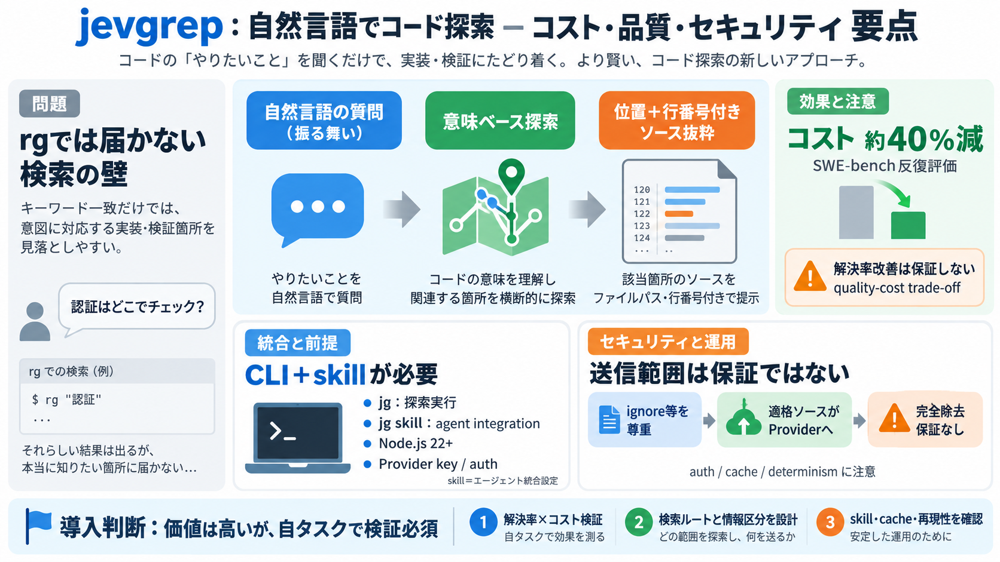

jevgrep by nassim-arifette | DecisionEval
DecisionEval Request a benchmark Request a benchmark Built with /Search and retrieval # jevgrep Jev-powered semanti…

DecisionEval Request a benchmark Request a benchmark Built with /Search and retrieval # jevgrep Jev-powered semanti…
Find code by what it does. JevGrep helps coding agents find relevant code when they do not know the file name or symbol …
The test suite is offline and does not use provider credentials. Run `npm run bench` for the local performance baseline,…
Forks : 6 Language : TypeScript License : MIT Last push : 23 Sep 2026 Read from GitHub on . Counts change da…
The default root is the current directory. You can also provide it explicitly: .bash Shell ``` jevgrep init --root pa…